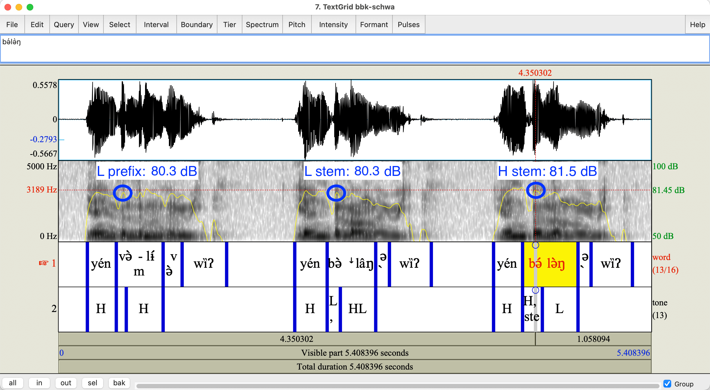
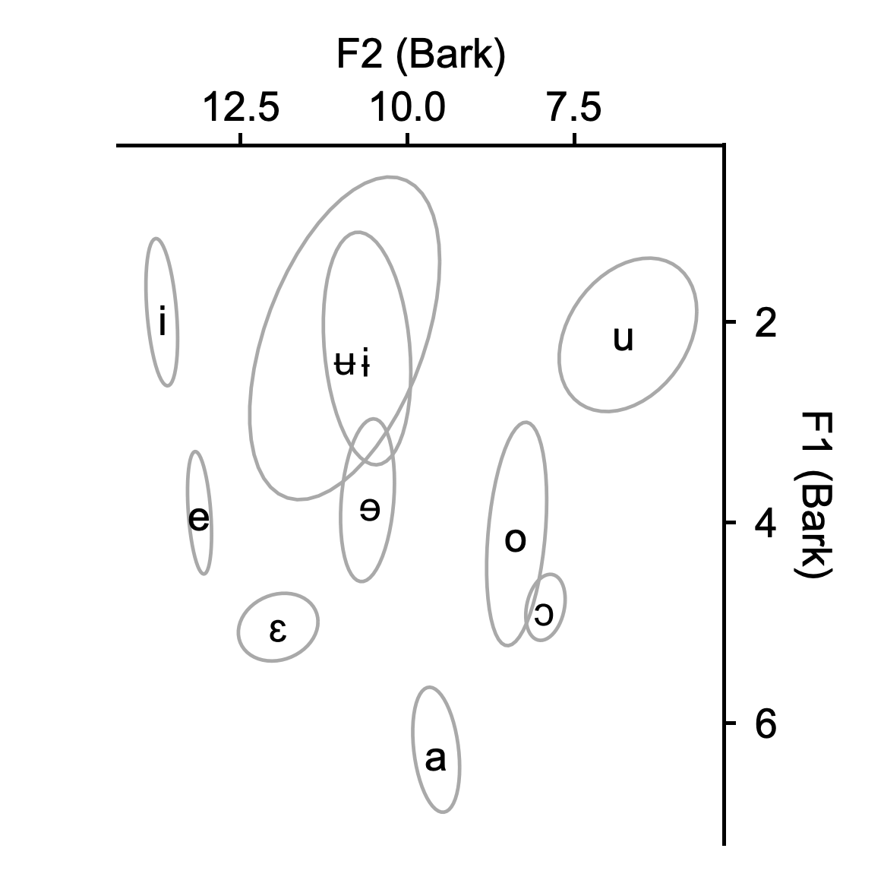
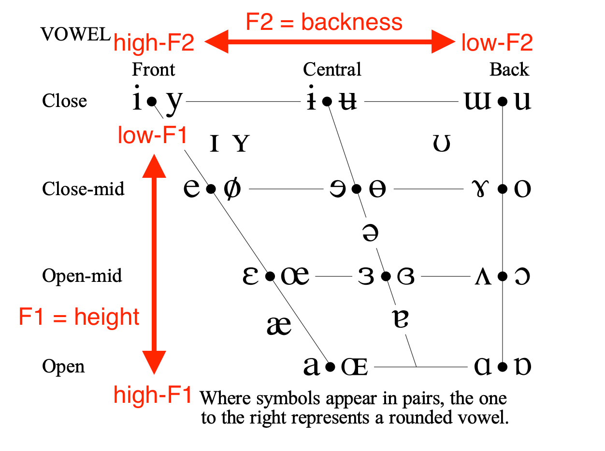
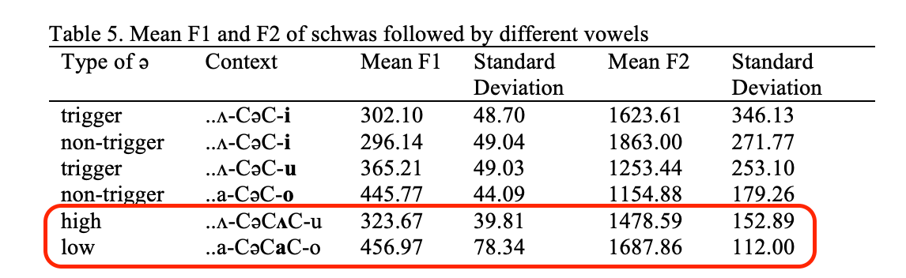
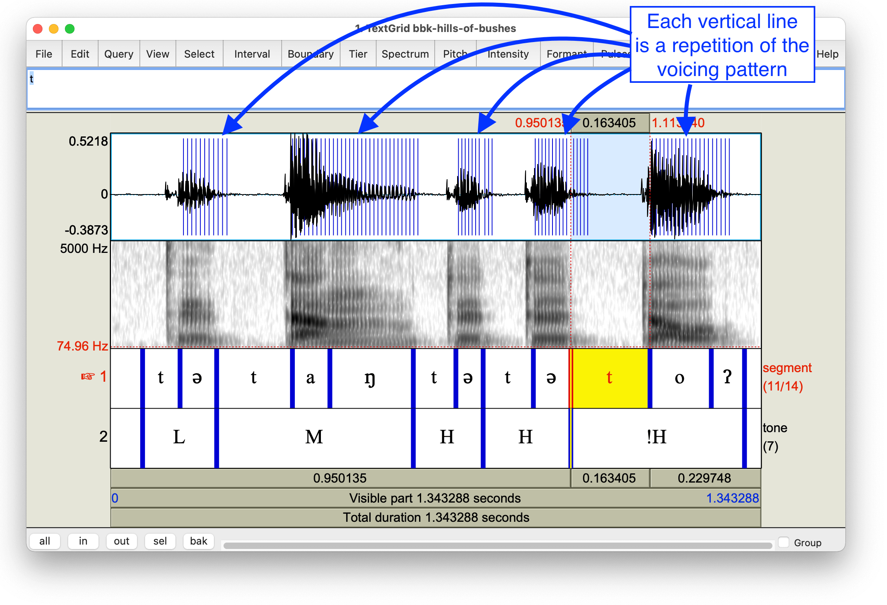
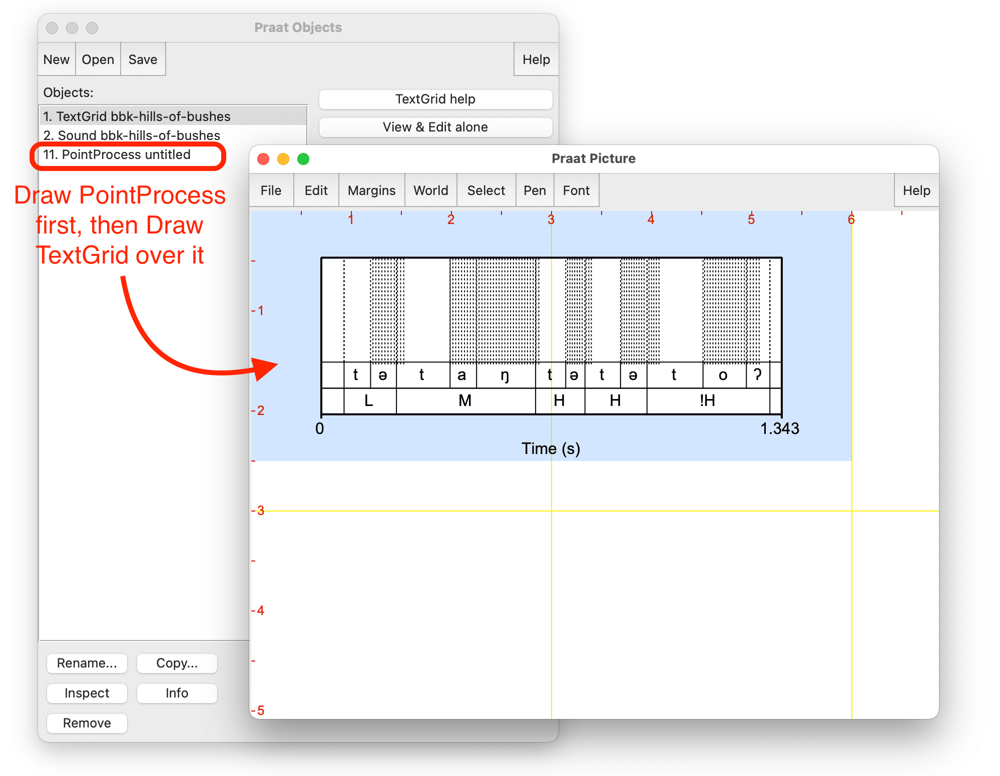
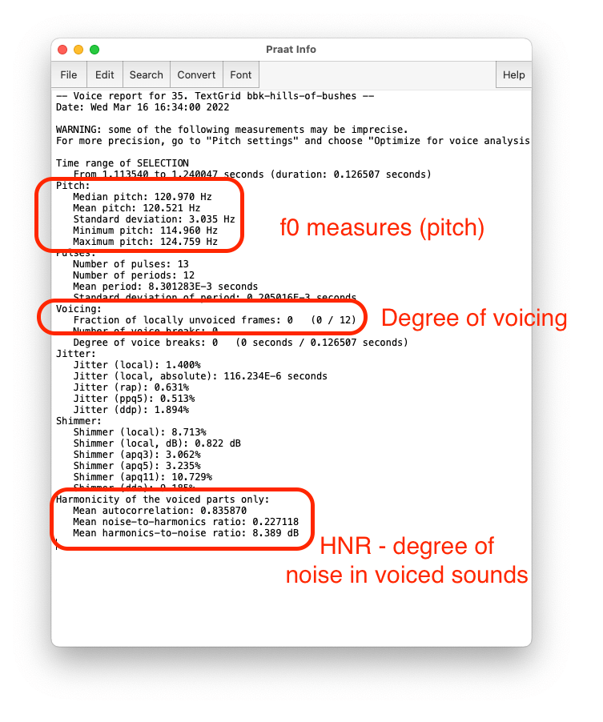
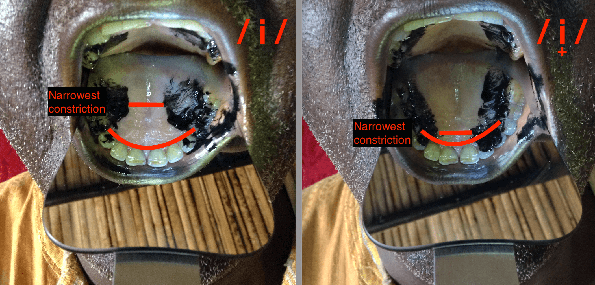

Intensity menu and settings are exactly parallel to Pitch menu and settings
The yellow intensity track can be hard to spot
Higher parts of track match darker parts of spectrogram and thicker parts of waveform
Model use
Intensity is useful for measuring degree of constriction
Degree of consonant constriction (or lenition)
Prosodic factors such as stress (in many languages)
Babanki example: stressed (stems) and unstressed (prefixes) don’t seem to be differentiated by intensity
But stem H has a longer duration

Model use
Implosive vs. non-implosive voiced stops have different intensity profiles figure from Nagano-Madsen & Thornell (2012)
See also Naidoo (2012)
Numerous other uses in prosody
f0 and intensity figures
f0 (pitch) and intensity tracks can easily be Drawn to figures as seen above
In “Pitch” and “Intensity” menus, there is the option to Draw directly to the Picture window with or without a TextGrid
Best to combine with a TextGrid whenever possible
Below: pitch contour for Kejom “hills of bushes” from Faytak & Akumbu (2021)
Formant frequencies
Formant frequencies provide vowel quality and other contrasts
Formant transitions show place of consonants
Lateral and nasal quality, etc.
Formant frequencies
Turn on “show formants”, and formant tracks for the first three formants (F1, F2, F3) appear
All have some inverse relationship with a property x: the higher the frequency, the less x
F1 inversely relates to height (higher F1 = lower vowel)
F2 inversely relates to backness (higher F2 = fronter vowel)
F3 inversely relates to retroflexion (low F3 = more retroflexion) and other qualities
Formant settings
Estimating formant frequencies requires calibration for every individual speaker: low pitched voices need different settings compared to high pitched voices
Often simplified to “men” versus “women”, but there is a lot of variation in pitch for each
Children (with very high f0) can be especially difficult
The default settings work well for higher-pitched voices
Lower-pitched voices need fewer formants and a lower maximum frequency
Formant tracking
The default settings of 5 formants in 5500 Hz (for higher-pitched voices) don’t work well for the very low-pitched voice of the Babanki speaker:
Better: changed to 4.5 formants, 4200 Hz; much lower frequency range
Formant figures
Formant tracks work best in a plot of F1 against F2 (which is quite hard to make in Praat), but formant tracks can be drawn like any other measure
Draw separately from TextGrid and “un-garnish”
Much like we did for the spectrogram + TextGrid combination
“Speckle” under “Draw” produces this from an extracted Formant object
F1-F2 scatterplots
F1-F2 scatterplots have F2 on the x axis, F1 on the y axis, with both axes reversed
Praat does have a limited ability to make scatterplots
Must manually specify plot size
Can only use these four point types: x + o .
Limited ability to label or make legends
Model use
Better scatterplot figures can be made using tabular data (we’ll discuss later) figure from Faytak & Akumbu (2021)
Here, ellipses indicate where each cloud of points is centered

With this plot it becomes clear why we reverse the axes: vowel space resembles the IPA vowel trapezoid

Model use
Formant data is useful in figuring out harmony systems; ATR or otherwise
Dagbani right-to-left ATR harmony also affects the low vowel /a/, counter to previous descriptions figure from Hudu (2016)
Moro’s height harmony system may condition ‘high’ and ‘low’ /ə/, previously thought to be transparent to harmony Ritchart & Rose (2015)
Note presentation of data in a table in addition to a scatterplot

Other uses for formant measures (non-exhaustive):
General description of vowel inventory Koffi (2018), McPherson (2020)
Characterizing harmony systems Starwalt (2008); McCollum & Essegbey (2020)
Voicing (“Pulses”)
Praat also detects measures relating to voicing: these are grouped under the unintuitive name “Pulses”
So called because voicing produces repeating, pulsing sounds
Detecting voicing = detecting regular pulses in the sound signal
The Pulses menu contains the same “showing”, measure-getting, and drawing functions as other menus
The result: each detected “voice pulse”, shown over waveform

Display pulses
The pulses themselves can be plotted with a TextGrid like any other similar object
Shaded areas indicate area where voice pulses occur repeatedly
Functions like a “voicing detector”

Voicing report
If voicing has a predictable timing but varies in extent, the voicing report may be useful (access in the Pulses menu)
Specifically the number after “Fraction of locally unvoiced frames”

Model use
Voicing in unexpected places is common for labial-velars; this can be confirmed by looking for pulses figure from Connell (1994)
Other voicing-related topics:
Mixed-voicing consonant clusters in Taa (“Khoi-san”) Nakagawa (2008); Naumann (2016)
Lenition or devoicing of consonants Solé, Hyman, & Monaka (2010); Boyer & Zsiga (2013); Bendjaballah & Le Gac (2021)
Text output and tabular data
Getting out of Praat
Praat is useful, but it has important limitations
Hard to produce all types of figures
Can’t do statistical analysis (which is standard for phonetics)
Because of this, we often need to export data from Praat into other programs
Tabular data
The most effective way to export numerical measurements: tabular data, that is, spreadsheets
One observation (time point, segment, etc) per row
One measure per column
Name columns using the first row
Other columns give non-numerical information (speaker ID, segment, word, etc.)
Excel or Google Drive work well (.xls, .txt, or .csv format):
sample tabular data
Spreadsheet construction
Basic approach to making tabular data is to
Generate text output in Praat
Copy-paste into a spreadsheet
Add metadata
Praat text output
Text output is generated using the menus
…
Point vs. interval
Depending on what your cursor is doing, “Listing” will get two different kinds of text output
If you have not selected an interval, you will get a point measurement
If you have selected an interval, you will get a list
A shortcut exists to get the midpoint of any interval
“Get…” versus “Listing…”
“Get…” provides a measurement at a point, or a mean measurement across an interval
“Get pitch”
“Get intensity”
“Get nth formant”
“Listing…” provides all measures within an interval if selected
“Pitch listing”
“Intensity listing”
“Formant listing”
(“Pulse listing”: timing of pulses)
“Voice report” is an exception: needs an interval, and generates a large number of different measures
Exceptions
f0/pitch has some special options:
“Get pitch” (mean f0 of interval, or instantaneous f0 at a point)
Minimum/maximum pitch (points)
Pitch listing (time series)
Example: mean/max/min pitches
Simple copy-paste, one observation per row
basic schematic image
Example: formant listing
Listings are trickier:
Comes with time points that need to be included
Number of time points varies
Listing data is tricky, especially formant data, because it comes in multiple columns
???
Google Docs can split Praat formant text data into columns:
Excel can also handle this upon import (not pasting)
This equally applies to pitch, intensity listings
Listings generally
If your data are in time series (multiple measures made in a row), like a formant or pitch track, you can try the following:
Paste in data as before
Count up and add number to a column (1, 2, 3, … total)
Write total in every row for that observation in another column
simpler time series example (stack 2 obs.)
Coding
Beyond the scope of this tutorial, but more efficient in a number of areas: basic coding
Praat scripting can quickly produce tabular data
Plots can be made using R (or Excel!)
Mostly free software
While there is a learning curve, the improvement to the process may pay off
BREAK
Articulatory data
Acoustics vs. articulation
Acoustics gives us an indirect idea of the movements of the articulators
Sometimes, though, we need to look directly at the articulators
If there are multiple explanations for acoustics
If the examined sounds are totally unfamiliar or especially unusual
In the Bantoid area, this is not uncommon!
Lip articulation
Movement of tongue and lips: lips are easily seen moving
Mirror at 45 degree angle provides a side view
Babanki vowels:
Spread, unrounded [i]
Compressed
Rounded [u]
Examples
Lip activity during Medumba [ʉ]: compressed like a bilabial stop, often leading to bilabial trill [ʙ] Olson & Meynadier (2015)

Palatographs
More complex, but provide information on tongue-palate contact Anderson (2008)
stop and fricative place
certain aspects of vowel articulation
Method
paint tongue
one token involving one lingual consonant
open mouth, insert mirror, photograph
Examples
Kom high vowels (which I will be talking about in my regular talk)
Kom iz vs. i
Audio examples
Examples
Excellent evidence of the phonetic basis of a lingual contrast
Dental vs. (post)alveolar stop contrast in Lusoga Nabirye, de Schryver, & Verhoeven (2016)
Equipment
Everything that we’ve talked about involves minimal equipment
Smartphone camera or point-and-shoot camera
Dental mirror: or hand-held metal mirror, about 6cm wide and 12cm long
Held outside for lip angles
Inserted against upper molars for palatography
Edible pigment (chocolate powder, edible charcoal) for palatography
A brush for painting the tongue (I prefer a narrow paintbrush or a makeup brush)
Optional:
Phone tripod or camera tripod
Photography lighting
Figures vs. tabular data
The value of photographic evidence as a figure should be obvious
In exceptional cases, you may measure some physical attribute of articulatory pictures/images and convert that to tabular data
i.e. ratio of lip opening to lip width (or height-height) in pixels
lip example/schematic
Other articulations
It should be mentioned that certain articulations further back are not discussed here
Dorsal or pharyngeal consonants
Complex tongue shapes, as in clicks
Advanced/retracted tongue root
However, ultrasound technology is gradually making it easier to image these articulations Miller, Namaseb & Iskarous (2007); Hudu (2014)
Entirely portable and non-invasive
But some significant technical barriers remain
Practical considerations
File naming and metadata
Name your recording files according to the same logical pattern
Date, language, topic
Avoid duplicating names
Avoid vague names
To identify further details, speak them during the recording itself
Identify and name yourself
Identify speaker(s) and their roles if this is not sensitive information
Identify anyone else who may be heard in the recording (assistants, translators, etc.)
Give time, date, and location of recording
File backups
Back up every recording in multiple locations if possible, to avoid technological problems or theft destroying your work
SD cards or thumb drives
Multiple computers (share key files with a trusted colleague)
Email small files to yourself (download as attachments later)
Long-term cloud storage (Google Drive, OneDrive, Box, Dropbox, etc) is ideal but uploading may be expensive
Tabular data
Tabular data consisting of many measures needs to be averaged, summarized (mean/standard deviation), or submitted to a statistical model
Averaging and basic statistical models can be done on this data, using Excel’s Data Analysis Tools (need to install)
While Excel works, learning a dedicated statistical program is better in the long run
picture example?
Statistics
Simple statistical analysis and modeling are standard in phonetics for analysis of numerical data (t-testing, linear models, curve fitting, etc)
We acknowledge this is not practical for all attendees, but collaborators can help guide this work
Having nicely formatted tabular data is crucial to this handoff
If you want to try stats yourself, it’s best to find software for handling tabular data:
R is free software which is useful for statistical analysis
Excel can also be used
Simple plots can also be made in Excel and R
Statistical power
Because of the need to model the data, it’s important to have enough statistical power
Need to ensure you have collected numerous repetitions of the phenomenon you’re after
Need to ensure that enough speakers are recorded (the more the better)
To get at the community average, instead of the idiosyncrasies of one speaker
Conclusions
Summary
We’ve covered:
Basics of instrumental phonetics
Praat (annotations, figures, measurements)
Text and tabular data
Photography for articulation data
Practical tips
What remains to be seen:
Long-term prospects for the methods
Unanticipated stumbling blocks
Incorporating further methodological advances
An audit
In compiling these slides and the references they contain, I reflected upon:
The current state of the phonetics literature for African languages
Who writes that literature
Who is cited here
It is clear that African linguists are under-represented at every level, regardless of how you define “African linguist”
figure showing count of first/any authors of African extraction/birth
figure showing count of first/any authors of African affiliation
Open discussion
Some potential topics for discussion:
How can we build capacity for this work in Africa’s universities?
Can existing high-quality documentary work be used as a starting point?
How can we advise this work when (not “if”) students decide to pursue it?
What should be the role of linguists off the continent in developing this area?
References
Akumbu, P. (2019). A featural analysis of mid and downstepped high tone in Babanki. In Clem, E., Jenks, P., & Sande, H., eds., Theory and description in African linguistics: Selected papers from the 47th Annual Conference on African Linguistics, 3–20. PDF
Anderson, V. (2008). Static palatography for language fieldwork. Language Documentation & Conservation, 2(1), 1-27. Article
Bendjaballah, S. & Le Gac, D. (2021). The acoustics of word-initial and word-internal voiced stops in Somali. Journal of the International Phonetic Association, first view. Abstract
Boyer, O., & Zsiga, E. (2013). Phonological devoicing and phonetic voicing in Setswana. In Ọla Orie, Ọ. and Sanders, K., eds., Selected Proceedings of the Annual Conference on African Linguistics, 43, 82-89. PDF
Connell, B. (1994). The structure of labial-velar stops. Journal of Phonetics, 22(4), 441-476. Abstract
Danis, N. (2020). Yorùbá vowel deletion involves compensatory lengthening: Evidence from phonetics. Stellenbosch Papers in Linguistics Plus, 60(1), 1-12. Abstract & PDF
Faytak, M., & Akumbu, P. W. (2021). Kejom (Babanki). Journal of the International Phonetic Association, 51(2), 333-354. Article
Gahl, S. (2008). Time and Thyme Are not Homophones: The Effect of Lemma Frequency on Word Durations in Spontaneous Speech. Language 84(3), 474-496. Article
Ge, C., Xiong, Y., & Mok, P. (2021). How reliable are phonetic data collected remotely? Comparison of recording devices and environments on acoustic measurements. In Proc Interspeech 2021, 1683-1687. PDF
Genzel, S. & Kügler, F. (2011). Phonetic realization of automatic (downdrift) and non-automatic downstep in Akan. Proceedings of ICPhS 17, Hong Kong. PDF
Gjersøe, S., Nformi, J., & Paschen, L. (2019). Hybrid falling tones in Limbum. In Clem, E., Jenks, P. & Sande, H., eds., Theory and Description in African Linguistics: Selected Papers from the 47th Annual Conference on African Linguistics, 95-118. PDF
Hamlaoui, F. & Makasso, E. (2019). Downstep and recursive phonological phrases in Bàsàá (Bantu A43). In Clem, E., Jenks, P. & Sande, H., eds., Theory and Description in African Linguistics: Selected Papers from the 47th Annual Conference on African Linguistics, 155-175. PDF.
Hudu, F. (2014). [ATR] feature involves a distinct tongue root articulation: Evidence from ultrasound imaging. Lingua, 143, 36-51. Abstract
Hudu, F. (2016). A phonetic inquiry into Dagbani vowel neutralisations. Journal of African Languages and Linguistics, (37)1, 59-89. Abstract
Hyman, L. (2014). How to study a tone language. Language Documentation & Conservation, 8, 525-562. Article
Koffi, E. (2018). The acoustic vowel space of Anyi in light of the cardinal vowel system and the Dispersion Focalization Theory. In Kandybowicz, J., Major, T., Torrence, H., & Duncan, P., eds., African linguistics on the prairie: Selected papers from the 45th Annual Conference on African Linguistics. PDF
Ladefoged, P. (1968). A phonetic study of West African languages: An auditory-instrumental survey. Cambridge University Press.
Lotven, S. & Berkson, K. (2019). The phonetics and phonology of depressor consonants in Gengbe. In Clem, E., Jenks, P. & Sande, H., eds., Theory and Description in African Linguistics: Selected Papers from the 47th Annual Conference on African Linguistics, 249-268. PDF
Maddieson, I. & Sands, B. (2019). The sounds of the Bantu languages. In Van de Velde, M., Bostoen, K., Nurse, D., & Philippson, G., eds., The Bantu Languages: Second Edition, 79-127. Routledge. Preprint
Mathes, T. & Chebanne, A. (2018). High tone lowering and raising in Tsua. Stellenbosch Papers in Linguistics Plus, 54, 1-16. Abstract & PDF
McCollum, A. & Essegbey, J. (2020). Initial prominence and progressive vowel harmony in Tutrugbu Phonological Data and Analysis 2(3), 1-37. Abstract & PDF
McKinney, N. (1990). Temporal characteristics of fortis stops and affricates in Tyap and Jju. Journal of Phonetics, Abstract
McPherson, L. (2020). Seenku. Journal of the International Phonetic Association, 50(2), 220-239. Abstract
Miller, A., Namaseb, L., & Iskarous, K. (2007). Tongue body constriction differences in click types. Laboratory Phonology, 9, 643-656. PDF
Monaka, K. (2005). Shekgalagari stops and theories of phonological representation. Lwati: A Journal of Contemporary Research, 2, 24-42. Abstract & PDF
Myers, S., Namyalo, S., & Kiriggwajjo, A. (2019). F0 timing and tone contrasts in Luganda. Phonetica, 76(1), 55-81. Abstract
Nabirye, M., de Schryver, G., & Verhoeven, J. (2016). Lusoga (Lutenga). Journal of the International Phonetic Association, 46(2), 219-228. Abstract & PDF
Nagano-Madsen, Y. & Thornell, C. (2012). Acoustic properties of implosives in Bantu Mpiemo. In Eriksson, A. & Abelin, Å., eds., Proceedings of FONETIK 2012, Gothenburg, 73-76. PDF
Naidoo, S. (2012). A re-evaluation of the Zulu implosive [ɓ]. South African Journal of African Languages, 30(1), 1-10. Abstract
Nakagawa, H. (2008). Aspects of the phonetic and phonological structure of the G|ui language (Doctoral dissertation). Synopsis
Naumann, C. (2016). The phoneme inventory of Taa (West !Xoon dialect). In Vossen, R. & Haacke, W., eds., Lone Tree: Scholarship in Service of the Koon. Essays in memory of Anthony Traill. Köln: Rüdiger Köppe Velag. PDF
Olson, K. & Meynadier, Y. (2015) On Medumba bilabial trills and vowels. Proceedings of ICPhS 18, Glasgow. PDF
Oppong, O. (2021). Pitch reset in Asante Twi, a dialect of Akan. MA Thesis, University of Helsinki. Abstract & PDF
Parker, S. (2008). Sound level protrusions as physical correlates of sonority. Journal of Phonetics, 36(1), 55-90. Abstract
Rialland, A. & Aborobongui, M. (2016). How intonations interact with tones in Embosi (Bantu C25), a two-tone language without downdrift. In Downing, L. & Rialland, A., eds., Intonation in African tone languages 195-xxx. Berlin: Mouton de Gruyter. DOIPDF
Ritchart, A. & Rose, S. (2015). Schwas in Moro Vowel Harmony. In Kramer, R., Zsiga, E., & Tlale Boyer, O., eds., Selected Proceedings of the 44th Annual Conference on African Linguistics, 231-242. PDF
Sanker, C., Babinski, S., Burns, R., Evans, M., Johns, J., Kim, J., Smith, S., Weber, N., & Bowern, C. (2021). (Don’t) try this at home! The effects of recording devices and software on phonetic analysis. Language, 97(4), e360-e382. PDF
Solé, M. J., Hyman, L. M., & Monaka, K. C. (2010). More on post-nasal devoicing: The case of Shekgalagari. Journal of Phonetics, 38(4), 604-615. AbstractPreprint
Starwalt, C. (2008). The acoustic correlates of ATR harmony in seven-and nine-vowel African languages: A phonetic inquiry into phonological structure. PhD dissertation, The University of Texas at Arlington. PDF
Traill, A., Khumalo, J., & Fridjhon, P. (1987). Depressing facts about Zulu. African Studies 46(2), 255-274. Abstract & PDF
Whalen, D. H., DiCanio, C., & Dockum, R. (2020). Phonetic documentation in three collections: Topics and evolution. Journal of the International Phonetic Association, ##, 1-27. Abstract
Zee, E. (1981). Effect of vowel quality on perception of post–vocalic nasal consonants in noise. Journal of Phonetics, 9(1), 35-48. Abstract